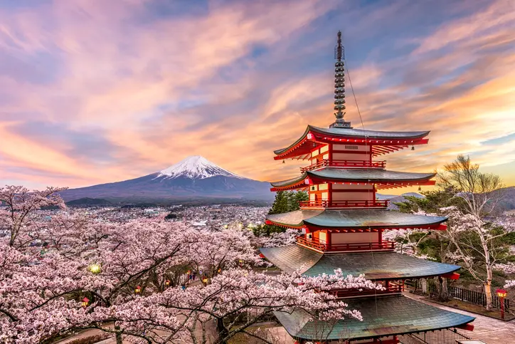

Bem-vindo ao Japão
Situado em uma das áreas mais geologicamente instáveis do mundo, o Japão possui um relevo montanhoso que influencia a distribuição de umidade pelo país. Dois climas são predominantes, o temperado e o tropical. O país possui uma população de mais de 126 milhões de habitantes, além de uma economia altamente desenvolvida e reconhecida pela utilização de avançada tecnologia no setor industrial."
